📘 05_security_dashboard_alerts
개요 슬라이드 실습 도움말
STEP 05 · DASHBOARD · ALERTS · OBSERVABILITY
보안 대시보드와 알림
보안 이벤트를 운영 지표로 집계하고 Critical 이벤트를 알림으로 연결한다.
전체 이벤트·차단·검토 건수 공격 유형과 위험 등급 분포 차단율과 미대응 이슈 Critical 이벤트의 Slack·이메일 연동 payload
개요 — STEP 05 학습 내용
이론적 배경 가드레일이 요청을 차단해도 운영자가 방어 상태와 반복되는 공격 양상을 볼 수 없다면 시스템은 개선되지 않는다. 보안 관제는 개별 이벤트를 기록하는 데서 끝나지 않고, 이벤트를 지표·화면·알림으로 변환해 운영자의 판단을 지원해야 한다.
대시보드는 추세와 분포를 보여 주고, 알림은 즉시 조치가 필요한 사건을 전달한다. 두 채널의 목적을 구분해야 정보 과부하를 줄이면서 Critical 사건의 대응 속도를 높일 수 있다.
학습 목표 보안 이벤트를 운영 지표로 집계하고 Critical 이벤트를 알림으로 연결한다.
핵심 내용 전체 이벤트·차단·검토 건수 공격 유형과 위험 등급 분포 차단율과 미대응 이슈 Critical 이벤트의 Slack·이메일 연동 payload 이론 보강 대시보드는 단순한 이벤트 개수보다 의사결정에 필요한 추세를 보여 줘야 한다. 전체 요청 수 대비 차단율, 위험 등급별 변화, 카테고리별 집중도, 미대응 건수를 함께 봐야 정책 효과를 해석할 수 있다.
알림은 모든 이벤트를 전달하는 채널이 아니다. Critical 조건, 중복 알림 억제, 담당자 라우팅, 재시도, 확인(acknowledgement) 상태를 설계해야 알림 피로를 줄이고 실제 대응률을 높일 수 있다.
대시보드와 알림에는 비밀정보 원문을 넣지 않는다. 이벤트 ID와 마스킹된 증거를 사용하고, 상세 원문은 별도 권한 영역에서만 조회하도록 분리한다.
산출물 · 완료 기준 대시보드 지표 정의서 집계 결과 JSON Critical 알림 payload FastAPI OpenAPI 문서와 API 테스트 결과 results/step05-metrics.json 6단계 리포트 입력 파일운영자가 차단량, 공격 유형, 위험 분포, 긴급 이벤트를 한눈에 확인할 수 있는 지표 구성을 설명할 수 있다.
프로젝트 구조
05_security_dashboard_alerts/
index.html — 포털 페이지
readme.md — 단계 학습 문서
requirements.txt — 실행 의존성
slides/ readme.md — 단계 학습 문서
s00-tech-spec.svg — 슬라이드 SVG
s01-dashboard-alerts.svg — 슬라이드 SVG
s02-dashboard-theory.svg — 슬라이드 SVG
s03-dashboard-source.svg — 슬라이드 SVG
s04-dashboard-checklist.svg — 슬라이드 SVG
s05-summary.svg — 슬라이드 SVG
src/ api.py — FastAPI 서버 엔드포인트
dashboard.html — 대시보드 화면
event_model.py — 보안 이벤트 모델
guardrail_service.py — 가드레일 서비스 조합
llama_guard.py — Llama Guard 연동
monitoring.py — 지표 집계
nemo_guardrails_client.py — NeMo Guardrails 연동
policy.py — 정책 규칙 로드·판정
report.py — 운영 리포트 생성
step03_guardrail.py — 3단계 가드레일 실행
step03_policy.py — 3단계 정책 모듈
store.py — 이벤트 저장소(SQLite)
소스코드 설명 파일 역할·내용 src/api.pyFastAPI 서버 — /events·/metrics·/alerts/critical·/dashboard 엔드포인트와 X-API-Key 인증. src/store.pySQLite 영속 계층 — 이벤트 저장·조회·집계. src/event_model.pyAPI·SQLite·지표·알림이 공유하는 버전 관리된 SecurityEvent 규약. src/guardrail_service.py2단계 어댑터 + 3단계 정책을 조합하는 애플리케이션 서비스 — 호출 순서·실패 동작·정규화 응답을 명시. src/step03_policy.py3단계 정책 모듈의 src/ 로컬 복사본 — 외부 단계 폴더 비참조 원칙. src/step03_guardrail.py3단계 가드레일 실행부의 로컬 복사본. src/llama_guard.pyLlama Guard 3 어댑터 로컬 복사본. src/nemo_guardrails_client.pyNeMo Guardrails 어댑터 로컬 복사본. src/policy.py5단계용 Decision/RiskLevel enum — 관제 집계 상태값. src/monitoring.py대시보드 지표·Critical 알림 집계. src/report.py대시보드·알림 연동용 JSON payload 생성 — 외부 연동 경계. src/dashboard.html보안 관제 대시보드 화면.
단계 간 연결: [← 4단계](../04_risk_rating_system/readme.md) · [6단계 →](../06_operations_report_integrated_lab/readme.md) · [전체 과정](../readme.md)
상위 프로젝트: 10 통합 프레임워크 readme → (도움말 탭에서 뷰어로도 열람 가능)
슬라이드 — 발표 자료 (SVG)
s00-tech-spec · 기술 사양 (참고용) SVG
s01-dashboard-alerts · 보안 대시보드 및 알림 구축 SVG
s02-dashboard-theory · 대시보드와 알림 이론 SVG

s03-dashboard-source · 대시보드와 알림 소스코드 SVG
s04-dashboard-checklist · 복습 체크리스트 SVG
s05-summary · 핵심 요약과 실습 질문 SVG
실습 — STEP 05 실행
아래 명령은 터미널 에서 프로젝트 루트(ai-guardrails-ops/) 기준으로 실행합니다.
실행 방법
복사 버튼으로 명령을 가져간 뒤 터미널에 붙여넣기 (⌘V) 하세요.
python3 -m pip install -r 05_security_dashboard_alerts/requirements.txt && uvicorn api:app --app-dir 05_security_dashboard_alerts/src --port 8000복사
실습 단계 dashboard_metrics()로 이벤트를 집계한다.위험 등급별·카테고리별 분포를 확인한다. critical_alert()가 Critical 이벤트에만 payload를 생성하는지 검증한다.추가 명령 python3 -m pip install -r 05_security_dashboard_alerts/requirements.txt
uvicorn api:app --app-dir 05_security_dashboard_alerts/src --reload --port 8000curl -X POST http://127.0.0.1:8000/guardrail/chat \
-H 'Content-Type: application/json' \
-H 'X-API-Key: dev-only-key' \
-d '{"message":"회사 비밀번호 재설정 절차를 요약해줘","conversation_id":"demo-1"}'curl -X POST http://127.0.0.1:8000/events/step03-guardrail-result/acknowledge \
-H 'X-API-Key: dev-only-key'소스 구조
파일·디렉터리 역할 경로 역할 src/api.py인증된 이벤트 등록·조회·지표·알림·확인 API와 /dashboard 제공 integration/guardrail_service.py2단계 실제 provider 호출, 3단계 정책, 출력 마스킹을 연결하는 서비스 계층 src/store.pySQLite 초기화·저장·조회·초기화·acknowledgement 처리 src/event_model.pyAPI·저장소·알림이 공유하는 이벤트 데이터 모델 src/policy.pyAPI 입력의 Decision·RiskLevel enum src/monitoring.py이벤트 생성·지표 집계·Critical payload 생성 src/report.py대시보드 payload와 주간·월간 리포트 envelope src/dashboard.htmlAPI 지표와 Critical 알림을 보여주는 웹 화면 requirements.txt5단계 FastAPI·Uvicorn 실행 의존성 slides/s00-tech-spec.svgFastAPI·SQLite·API Key 기술 사양 slides/s01-dashboard-alerts.svg대시보드·알림 전체 구조 slides/s02-dashboard-theory.svg운영 지표와 Critical 알림 이론 slides/s03-dashboard-source.svgAPI·저장·집계 소스 설명 slides/s04-dashboard-checklist.svg관제 실습 체크리스트 slides/s05-summary.svg5단계 핵심 요약과 질문 slides/readme.md슬라이드 순서·제목·산출물 목록
※ 브라우저에서는 실행할 수 없습니다 — 명령을 복사해 터미널에 붙여넣으세요.
도움말 — 페이지 사용법
탭 전환
상단 내비게이션을 클릭하면 해당 패널이 표시됩니다. 주소창 해시(#tab-slides 등)로 특정 탭에 바로 이동할 수 있습니다.
SVG 뷰어
슬라이드 탭의 SVG 이미지를 클릭 하면 팝업 뷰어로 확대 표시됩니다
뷰어에서 ‹ › 버튼 또는 ← → 키로 이동합니다
ESC · ✕ 닫기 · 어두운 배경 클릭으로 닫습니다
readme 문서
아래 버튼으로 마크다운 문서를 뷰어 팝업으로 확인할 수 있습니다.
readme.md 열기
slides/readme.md 열기
단축키
키 동작 ← →뷰어에서 이전/다음 슬라이드 ESC뷰어 닫기
참고
이 페이지는 서버 없이 동작합니다 — index.html을 브라우저로 바로 열면 됩니다
뷰어의 readme 내용은 페이지 생성 시점의 스냅샷입니다 — 원본이 수정되면 페이지 재생성이 필요합니다
05_security_dashboard_alerts · STEP 05 학습 자료
5단계 · 보안 대시보드 및 알림 구축
이론적 배경
가드레일이 요청을 차단해도 운영자가 방어 상태와 반복되는 공격 양상을 볼 수 없다면 시스템은 개선되지 않는다. 보안 관제는 개별 이벤트를 기록하는 데서 끝나지 않고, 이벤트를 지표·화면·알림으로 변환해 운영자의 판단을 지원해야 한다.
대시보드는 추세와 분포를 보여 주고, 알림은 즉시 조치가 필요한 사건을 전달한다. 두 채널의 목적을 구분해야 정보 과부하를 줄이면서 Critical 사건의 대응 속도를 높일 수 있다.
학습 목표
보안 이벤트를 운영 지표로 집계하고 Critical 이벤트를 알림으로 연결한다.
핵심 내용
전체 이벤트·차단·검토 건수 공격 유형과 위험 등급 분포 차단율과 미대응 이슈 Critical 이벤트의 Slack·이메일 연동 payload 이론 보강
대시보드는 단순한 이벤트 개수보다 의사결정에 필요한 추세를 보여 줘야 한다. 전체 요청 수 대비 차단율, 위험 등급별 변화, 카테고리별 집중도, 미대응 건수를 함께 봐야 정책 효과를 해석할 수 있다.
알림은 모든 이벤트를 전달하는 채널이 아니다. Critical 조건, 중복 알림 억제, 담당자 라우팅, 재시도, 확인(acknowledgement) 상태를 설계해야 알림 피로를 줄이고 실제 대응률을 높일 수 있다.
대시보드와 알림에는 비밀정보 원문을 넣지 않는다. 이벤트 ID와 마스킹된 증거를 사용하고, 상세 원문은 별도 권한 영역에서만 조회하도록 분리한다.
실습
dashboard_metrics()로 이벤트를 집계한다.위험 등급별·카테고리별 분포를 확인한다. critical_alert()가 Critical 이벤트에만 payload를 생성하는지 검증한다.API 중심 구현
src/api.py는 대시보드용 집계 결과를 HTTP API로 제공한다. 이벤트는 기본 SQLite 저장소에 기록하며, 실제 운영 환경에서는 PostgreSQL이나 이벤트 스트림으로 교체할 수 있다.
메서드 경로 역할 GET/health서비스 상태 확인 POST/guardrail/chat실제 NeMo Guardrails·Llama Guard 호출 및 결과 저장 POST/events보안 이벤트 등록 GET/events이벤트 목록 조회 GET/metrics대시보드 지표 조회 GET/alerts/criticalCritical 알림 목록 조회 DELETE/events실습용 이벤트 초기화 GET/dashboard웹 기반 지표 화면 POST/events/{event_id}/acknowledge운영자 확인 상태 기록
실행:
python3 -m pip install -r 05_security_dashboard_alerts/requirements.txt
uvicorn api:app --app-dir 05_security_dashboard_alerts/src --reload --port 8000기본 API 키는 dev-only-key이며 요청 헤더에 X-API-Key를 넣는다. 배포 전에는 GUARDRAIL_API_KEY를 변경한다. API 문서는 서버 실행 후 http://127.0.0.1:8000/docs, 웹 화면은 http://127.0.0.1:8000/dashboard에서 확인한다. 이벤트는 기본적으로 results/security_events.db에 저장된다.
실제 Guardrail 서비스 호출
POST /guardrail/chat은 더미 응답을 사용하지 않는다. 요청은 3단계 입력 정책을 먼저 통과한 뒤 NeMo Guardrails와 Llama Guard를 호출하고, 출력 마스킹과 최종 이벤트 저장을 수행한다.
curl -X POST http://127.0.0.1:8000/guardrail/chat \
-H 'Content-Type: application/json' \
-H 'X-API-Key: dev-only-key' \
-d '{"message":"회사 비밀번호 재설정 절차를 요약해줘","conversation_id":"demo-1"}'선택 의존성 설치, Meta 모델 권한 승인, Ollama 실행이 준비되지 않으면 API는 503을 반환한다. 이는 실제 호출 실패를 성공으로 위장하지 않기 위한 동작이다. 성공 시 trace_id로 /events, /metrics, /alerts/critical에서 결과를 확인한다.
대시보드 payload와 주간·월간 리포트 envelope 조합 예제는 src/report.py에서 제공한다. Critical 알림을 확인한 뒤에는 다음 API로 상태를 남긴다.
curl -X POST http://127.0.0.1:8000/events/step03-guardrail-result/acknowledge \
-H 'X-API-Key: dev-only-key'산출물
대시보드 지표 정의서 집계 결과 JSON Critical 알림 payload FastAPI OpenAPI 문서와 API 테스트 결과 results/step05-metrics.json 6단계 리포트 입력 파일단계 간 연결
← 4단계 · 6단계 → · 전체 과정
4단계 step04-security-event.json을 POST /events로 등록하고, GET /metrics 결과를 results/step05-metrics.json으로 저장한다. 6단계는 이 지표를 운영 리포트의 입력으로 사용한다.
완료 기준
운영자가 차단량, 공격 유형, 위험 분포, 긴급 이벤트를 한눈에 확인할 수 있는 지표 구성을 설명할 수 있다.
파일·디렉터리 역할
경로 역할 src/api.py인증된 이벤트 등록·조회·지표·알림·확인 API와 /dashboard 제공 integration/guardrail_service.py2단계 실제 provider 호출, 3단계 정책, 출력 마스킹을 연결하는 서비스 계층 src/store.pySQLite 초기화·저장·조회·초기화·acknowledgement 처리 src/event_model.pyAPI·저장소·알림이 공유하는 이벤트 데이터 모델 src/policy.pyAPI 입력의 Decision·RiskLevel enum src/monitoring.py이벤트 생성·지표 집계·Critical payload 생성 src/report.py대시보드 payload와 주간·월간 리포트 envelope src/dashboard.htmlAPI 지표와 Critical 알림을 보여주는 웹 화면 requirements.txt5단계 FastAPI·Uvicorn 실행 의존성 slides/s00-tech-spec.svgFastAPI·SQLite·API Key 기술 사양 slides/s01-dashboard-alerts.svg대시보드·알림 전체 구조 slides/s02-dashboard-theory.svg운영 지표와 Critical 알림 이론 slides/s03-dashboard-source.svgAPI·저장·집계 소스 설명 slides/s04-dashboard-checklist.svg관제 실습 체크리스트 slides/s05-summary.svg5단계 핵심 요약과 질문 slides/readme.md슬라이드 순서·제목·산출물 목록